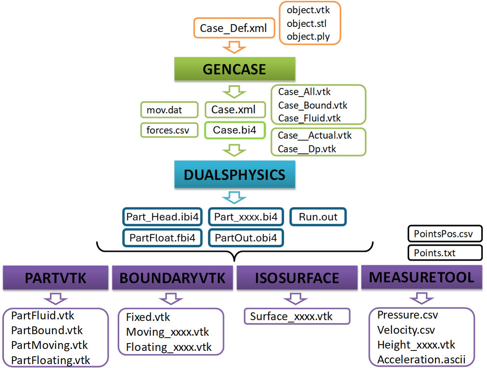
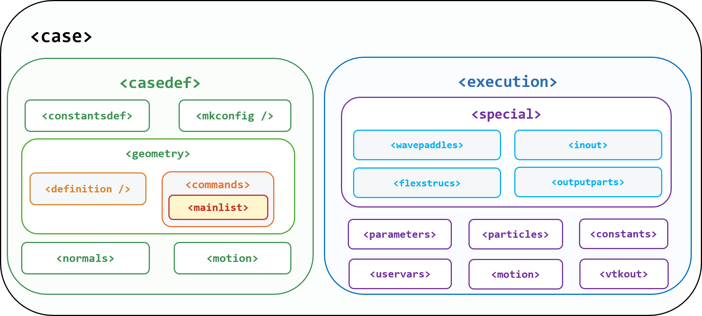

Introduction to XML¶
Under review by Bonaventura Tagliafierro, José Domínguez and Alex Crespo
Why does DualSPHysics use XML?¶
XML (Extensible Markup Language) stores configuration data as named elements and attributes in a hierarchy. In DualSPHysics, that hierarchy describes the geometry, particle properties, motions, physical constants, numerical settings and specialised features of a simulation case.
The text format is readable and editable across platforms. Cases can be copied and adapted, generated by scripts, and compared with text-diff or version-control tools. The explicit settings make the configuration easier to inspect and reuse, together with any external files it references. GenCase interprets the case definition during pre-processing; the solver uses the resulting execution configuration and particle data.
From a case definition to a simulation¶
An XML file records the geometry, material identifiers, initial conditions and numerical configuration of a case in an editable text format. GenCase uses the case definition to create the initial particles and their associated metadata. DualSPHysics then loads that particle data together with the execution configuration. Keeping the XML and its referenced geometry and data files together makes a configuration reproducible; the XML alone does not contain external CAD surfaces, motion histories or binary initialisation fields.
This guide brings together the general XML configuration topics. Code blocks are fragments, with their required parent explained nearby; they are not complete runnable cases unless explicitly stated. Numerical values in examples illustrate the named configuration and must not be treated as universal defaults. The format references distributed with the software define the available elements and attributes. Module-specific guides provide additional prerequisites and compatibility limits.
For executable selection and the preparation, solver and post-processing sequence, see The DualSPHysics Workflow and CPU, GPU and Multi-GPU Execution. Selecting an execution backend does not establish support for every XML feature.

Input and output files¶
| File or family | Role |
|---|---|
Case_Def.xml |
Editable input to GenCase: case definition and user execution settings. |
Case.xml |
Execution XML written by GenCase, including generated particle information and calculated constants. |
Case.bi4 |
Initial particle data. |
Geometry .vtk, .stl, .ply |
External geometric inputs when referenced by drawing commands. |
| Motion data and acceleration CSV files | Time histories explicitly referenced by the configuration. |
Case_All.vtk, Case_Bound.vtk, Case_Fluid.vtk |
Particle geometry for visual inspection after generation. |
Case__Actual.vtk, Case__Dp.vtk and named shape files |
Geometric representations produced by the selected shape-output settings. Check the actual generated filenames. |
Part_Head.ibi4 |
Basic particle-output information used by post-processing tools. |
Part_XXXX.bi4 |
Particle state at saved times. |
PartOut.obi4 |
Particles excluded during the simulation. |
PartFloat.fbi4 |
Floating-body information. |
Run.out |
Text execution log. |
| Post-processing VTK and measurement files | Visualisation and extracted results, including particle, surface, slice, velocity, height and pressure data. |
XML is organised by element names and attributes and can be edited with a text editor. Binary particle files reduce storage and input/output overhead compared with textual particle arrays; their size advantage depends on the data and representation. The presentation quotes a sixfold reduction as its comparison, rather than a guaranteed ratio for every dataset. The binary format supports double-precision positions and additional arrays; software must use the corresponding binary reader, such as the distributed JPartDataBi4 implementation. These files are not editable XML.
VTK is used for geometric inspection and result visualisation in applications such as ParaView. The source workflow uses legacy binary POLYDATA output. The current geometry template also provides explicit VTP, VTU and STL shape-output alternatives; select formats supported by the intended tool.
Case.xml is normally produced by GenCase from Case_Def.xml. The source workflow also allows an execution XML to be prepared by the user; its generated constants, particle counts, marker ranges and binary particle data must remain mutually consistent. Editing the execution XML does not regenerate its particle data.
The workflow separates PARTVTK particle conversion, BOUNDARYVTK boundary geometry, ISOSURFACE surface reconstruction and MEASURETOOL sampled measurements. Measurement points may be supplied through PointsPos.csv or Points.txt. The illustrated outputs include Particles_XXXX.vtk, Surface_XXXX.vtk, Slices_XXXX.vtk, Velocity_XXXX.vtk and Height_XXXX.vtk; their content depends on the selected post-processing operation and saved particle fields.
The XML file before GenCase¶
The user normally edits Case_Def.xml, or the corresponding case-specific name ending in _Def.xml. The case root contains the GenCase definition in casedef and the solver settings in execution. Geometry commands define which particles GenCase will create. The user also supplies the physical constants, marker configuration, initial conditions, motion or other options required by that particular case. Some of these sections are optional.
For example, the distributed examples/main/01_DamBreak/CaseDambreak_Def.xml has constantsdef, mkconfig and geometry beneath casedef, and parameters beneath execution. Its particle-generation bounds are:
<definition dp="0.0085" units_comment="metres (m)">
<pointmin x="-0.05" y="-0.05" z="-0.05" />
<pointmax x="2" y="1" z="1" />
</definition>
This fragment belongs to case/casedef/geometry. Its spacing and bounds are specific to this example. The complete drawing commands and execution settings remain in the case file. At this stage the example has no execution/particles or execution/constants blocks: these depend on particle generation and the resolution of requested calculations.
The XML file after GenCase¶
GenCase reads the definition and writes a separate execution XML, normally Case.xml, alongside the initial binary particle data Case.bi4. The output prefix and directory come from the GenCase invocation. This process preserves the original _Def.xml; it does not update that source file in place.
The inspected GenCase v6 output for the dam-break example retains casedef and its supplied execution/parameters, then adds particles, constants, uservars, motion and vtkout under execution. These output sections describe the generated particle populations, resolved physical quantities, exported variables, execution motion and requested geometry-output associations. The exact sections and their contents depend on the case and generator options; the presence of an empty motion block does not imply moving boundaries.
The following generated particle blocks are an excerpt from that output, with the diagnostic _summary omitted:
<particles np="171496" nb="43186" nbf="43186" mkboundfirst="10" mkfluidfirst="1">
<fixed mkbound="0" mk="10" begin="0" count="39993" />
<fixed mkbound="1" mk="11" begin="39993" count="2383" />
<fixed mkbound="10" mk="20" begin="42376" count="810" />
<fluid mkfluid="0" mk="1" begin="43186" count="128310" />
</particles>
This fragment belongs to case/execution. The population sizes, index ranges and final marker values describe this generated example; they are not settings to copy into an unrelated case. constants also records the resolved dp, smoothing length h, equation-of-state coefficient b and particle masses. In this output dp=0.0085 m and h=0.014722431864 m. GenCase has resolved the corresponding automatic quantities from the definition.
| Before GenCase: case definition | After GenCase: execution XML |
|---|---|
| User geometry, marker labels and generation settings | Retained definition plus generated population counts, indices and final marker offsets |
| User physical inputs and requests for automatic calculation | Resolved values recorded in execution/constants |
| User execution parameters and any required special-feature configuration | Execution configuration supplied to the solver, together with matching binary particle data |
Correct geometry and generation settings in the definition and regenerate the outputs when particle data must change. Editing Case.xml alone cannot rebuild Case.bi4. See generated particle information and execution diagnostics for the detailed output fields.
XML hierarchy and editing conventions¶
The root element is case. Its casedef section supplies the information required by GenCase; execution supplies solver settings and receives generated metadata. GenCase reads and augments the execution configuration rather than treating every child as user-generated data.
| Parent | Principal children and purpose |
|---|---|
case/casedef |
constantsdef, mkconfig, geometry, initials, floatings, properties, motion and, where needed, normals. |
casedef/geometry |
Optional predefinition, particle-generation definition, and commands. |
geometry/commands |
Named auxiliary list elements and the executed mainlist. |
case/execution |
User special and parameters settings; generated particles, constants, variable exports and geometry-output information where applicable. |
execution/special |
Independent feature configurations, for example waves, damping, gauges and imposed accelerations. |
execution/parameters |
Main solver parameters and simulationdomain. |
XML names are case-sensitive. A value attribute is not interchangeable with an element name: parameter uses key and value, while other features use attributes such as v, x, time or distpt. Follow the reference for the particular element. comment and units_comment describe a setting; they do not replace its numerical value or convert units. XML comments use <!-- ... -->; literal comparison characters inside attributes must be XML-escaped where required.
An underscore-prefixed element, such as _hdp, denotes a disabled alternative in the format examples. Many special features additionally support active="true" or active="false"; this is feature-specific. Do not assume that adding active to an arbitrary element implements a general switch. In older parameter lists a # at the beginning of the key disables that legacy parameter. It is distinct from # at the beginning of a value, which requests expression evaluation.
The structure below illustrates optional feature blocks as well as generated execution information. special is a child of execution, not of casedef or parameters. The motion definition under casedef and the processed motion information under execution have different roles. A case need not contain every block shown, and a solver must support each requested functionality.

Using the XML Guides¶
XML Configuration explains the principal XML blocks, physical scales and solver parameters in detail. The subsequent guides cover specialised functionalities and their prerequisites. Many of these use elements inside execution/special, including the examples in the hierarchy figure; other settings belong in casedef or execution/parameters, as each guide explains. The related-guide table in XML Configuration links to mDBC, Inlet/Outlet, Variable resolution, Flexible structures, Chrono, MoorDynPlus and Advanced shifting.